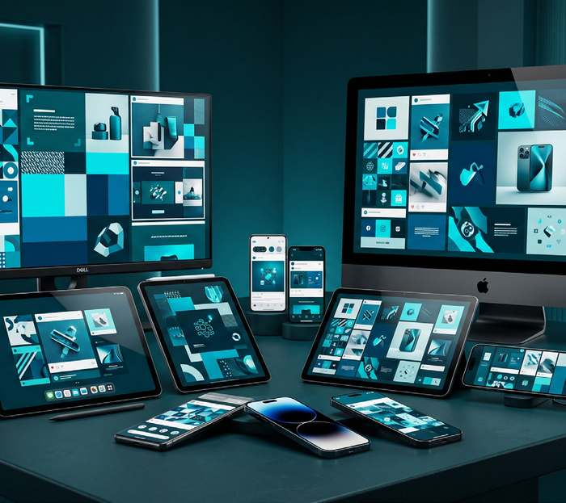

Social Media Post Design
Overview
Social content produced as a rhythm, not a run of one-offs.
Social feeds are one of the fastest places a brand can drift. We build post systems and content templates so every post — whatever the topic — is instantly recognisable as yours, and can be produced on schedule without a redesign each time.
Why it matters: A consistent content system builds recognition over time in a way that one-off posts don't.
What's Included
- Social media post systems
- Platform-specific templates
- Story and reel graphics
- Content and asset libraries
Frequently Asked
Common questions
Do you design for specific platforms?
Templates are built for the platforms you actually use, sized and formatted correctly for each.
Can our team produce posts from the templates ourselves?
Yes — the system is built so your team can populate it without needing a designer for every post.
Related Services